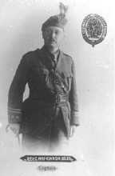

-1-MasterItem.svg)
Stories of Westminster United Church & its People / Page
38
“Many alterations were now necessary in adjusting one’s religious doctrine to these revolutionary
theories. To one fresh from the biological classroom the critical point of view
was very welcome…
no six days of creation … no historic Garden of Eden … no serpent that could talk … no compendious
ark built by four men whose first timbers lasted without rotting for 600 years … no further
speculations as to what Adam said to Methuselah …”
However much his encounter with Darwin’s ideas may have shaken
his sense of faith, at least in the more scientifically incongruent ideas
of Christian orthodoxy, Clarence completed his seminary studies and in
1890 returned to Canada; joining a mission field at Westchester Station
in Nova Scotia. His balancing act between Darwinism and Christian faith
was fairly characteristic of the “theological liberalism” fashionable among
educated Protestants of the 19th century. Probably owing as much to
inexperience as to his rarefied education, his first sermons were “remote”
and emotionally “feeble”. After they failed to capture the imagination of his
congregation, he experimented with a more dramatic approach to preaching
that anticipated his later evangelical style: “I stepped to the side of the little
pulpit,” he writes, “and began to describe Cain and Abel building their
altars and began at the same time rather timidly to act the scene.
To my surprise the people were actually looking and listening.”
Part 2
Copyright laws were lax at that time and pirated copies of books were printed in
the US and readily
available at cheap prices. Clarence admits that, thanks to this opportunity, he
furnished himself
with a full library. In another indulgence of his heterodox interests, he
purchased a pirated copy
of the other great revolutionary masterpiece of the 19th century,
Das Kapital
by Karl Marx, who
as a communist shouldn’t have minded this violation of property rights. Notwithstanding his
intellectually liberal cast of mind, Clarence was also gravitating towards
certain aspects of the
fiery new conservative evangelism, whose spread in the 19th and 20th century was
partially
a reaction against the more intellectual, modernizing theological liberalism
that he appears
to have imbibed at the University of Edinburgh.

Rev. Clarence MacKinnon